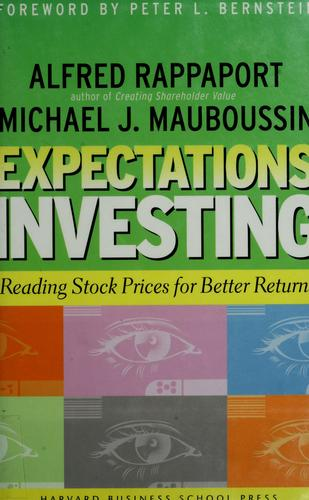

阿尔弗雷德·拉帕波特（Alfred Rappaport）是美国西北大学凯洛格商学院荣誉教授，也是“股东价值”理念的奠基性人物，其1986年著作《创造股东价值》奠定了他在战略财务领域的学术地位。迈克尔·莫布森（Michael J. Mauboussin）曾任职于瑞士信贷、BlueMountain Capital，现为摩根士丹利对等研究（Counterpoint Global）负责人，同时在哥伦比亚商学院讲授金融课程。两人于2001年合著《预期投资》，历经二十年后于2021年在哥伦比亚大学出版社推出修订更新版，纳入了互联网泡沫、金融危机以及当代科技公司估值的新案例，并被列入哥伦比亚大学格雷厄姆与多德投资中心系列丛书。中文版曾以《预期投资》为名在国内出版，是国内价值投资圈中流传较广的经典读本之一。
本书的核心论点是一次思维方式的逆转：大多数投资者的习惯是先预测公司未来的盈利或现金流，然后折现得出内在价值，再与股价比较。拉帕波特与莫布森则建议颠倒这一顺序——从当前股价出发，反向推算市场究竟对公司的增长速度、利润率、投资需求和竞争存续期（competitive advantage period）嵌入了怎样的预期。在他们看来，股价本身就是一份可以被解读的合同，承载着市场参与者对公司未来经营的集体押注。找到预期与现实之间的缺口，才是产生超额收益的真实来源，而不是依赖那些不可避免带有主观色彩的自下而上现金流预测。书中进一步提出“价值触发因素”（value triggers）的分析框架，从销售增长率、营业利润率、资本投资效率三个维度入手，帮助投资者系统性地判断哪类新信息足以改变市场预期，从而形成可交易的机会。
这一框架在2021年版中得到了显著扩充。两位作者用专章讨论了网络效应、平台经济和无形资产密集型企业——这些在传统股东价值分析模型中最难被处理的商业模式——并引入了情景分析与概率权重的方法加以应对。他们同时强调，竞争优势的持续期往往被市场系统性高估，而很少有公司能在超额回报消退之前维持足够长的护城河。书中附有大量真实的案例分析，包括对消费品、零售、科技板块的具体拆解，使抽象框架落地为可操作的分析步骤。
本书在机构投资界获得了广泛认可。橡树资本创始人霍华德·马克斯（Howard Marks）称赞道：“《预期投资》将投资分解为各个组成部分，解释了什么是优质公司、什么是有吸引力的股票定价。这是第二层次的思考——一门智识投资的研究生课程。”知名风险投资人、Benchmark合伙人比尔·葛力（Bill Gurley）评价：“对于公司估值的思考方式，无论是今天还是过去，都同样切中要害。理解预期、评估竞争战略、珍视期权价值，以及聚焦现金流——这些都会让你在公私市场上成为更有效的投资者。”摩根豪斯尔（Morgan Housel）则表示，这是“为数不多让我有‘茅塞顿开’之感并改变了我思考投资方式的书籍之一”。对于任何希望真正理解价格与价值关系的投资者而言，本书提供的不是一套技巧，而是一种更诚实的分析语言。